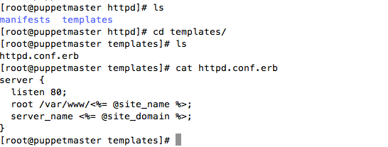
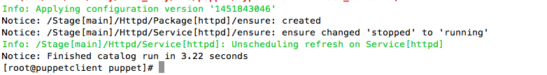
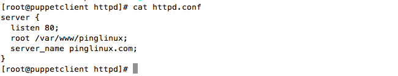

What is template ?
Template are the files used to manage the text with simple inputs.Usually, they are used to configure the contents of the files.
Puppet Template
Template files are usually kept in the templeate directory inside the modules directory
[root@puppetmaster~]#vi /etc/puppet/modules/httpd/templates/httpd.conf.erb
The <%= %> signs mark where parameters will go; we will supply site_name and site_domain from init.pp manifest
/etc/puppet/modules/httpd/templates httpd.conf.erb /manifests init.pp
vi /etc/puppet/manifest/site.pp include httpd
httpd is the class name inside the init.pp manifest of httpd modules
[root@puppetclient~] puppet agent -t
cat /etc/httpd/httpd.conf